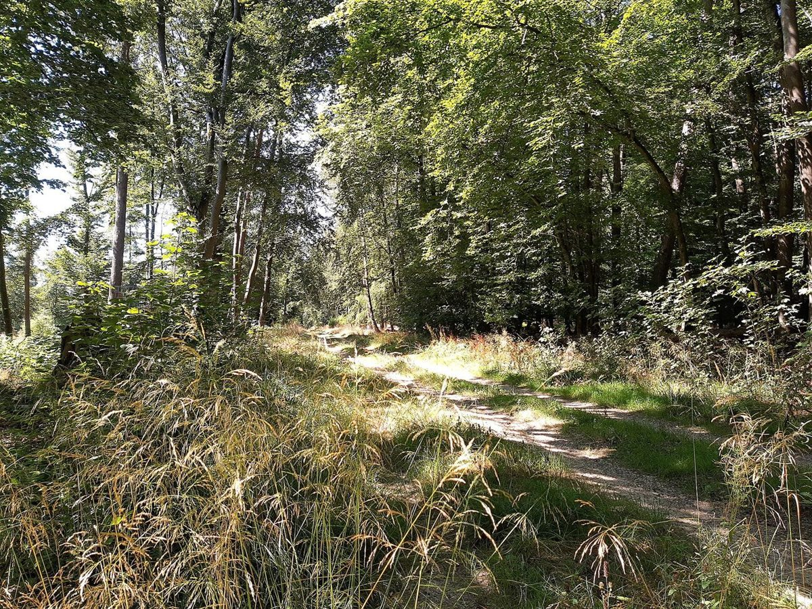
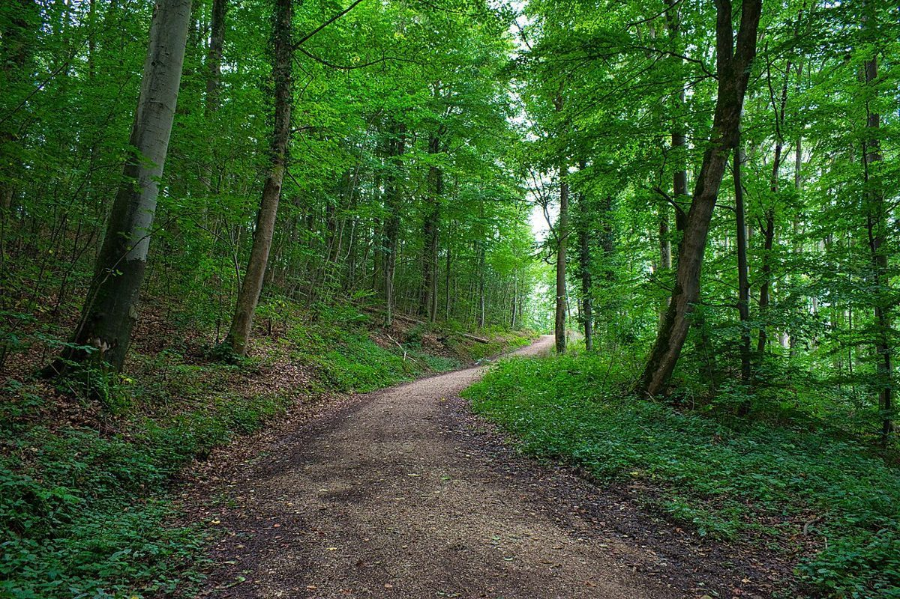
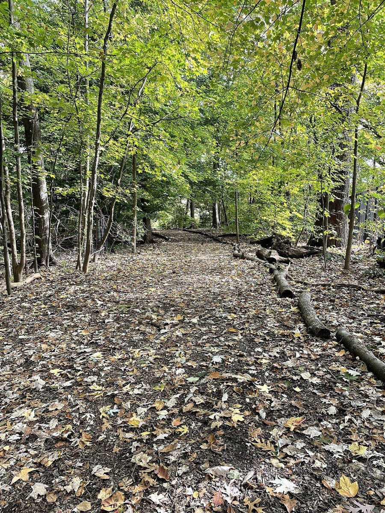
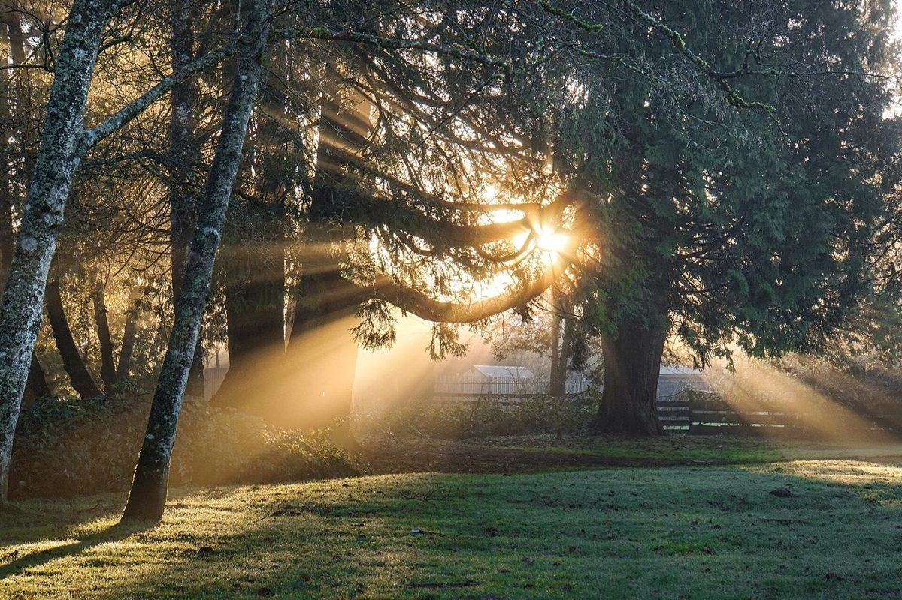
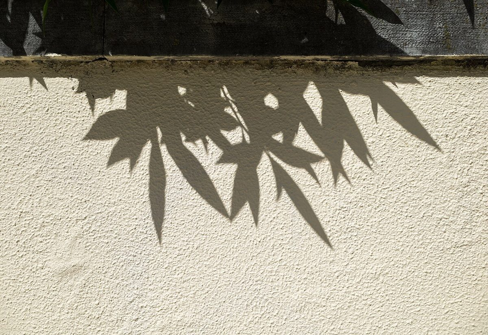

カフェ / 鹿児島県指宿市
kimamana cafeLaLa
鹿児島県指宿市湊にあるカフェ「kimama na cafe LaLa」のご案内ページです。営業時間やメニューは準備中。まずはInstagramをのぞいてみてください。

制作側の連想
「きまま」から思いついた、寄り道の地図
店名の由来は分かりません。制作側は「kimama」という響きから「気まま」という言葉を連想し、決まったルートのない寄り道を思い浮かべました。そこでこのページは、点線の道を気ままに歩くように、5つの寄り道を並べる作りにしています。制作側の連想で、お店の理念・由来とは無関係です。
寄り道5つ(写真はイメージ)
気ままに歩く、5つの景色。
写真は指宿市の風景ではありません。気分のイメージで選んだ、国外・撮影地不明のフリー素材です。
- 1
ひとつめ
まっすぐな道
急ぐ日は、まっすぐ。

撮影地不明のイメージ - 2
ふたつめ
落ち葉の道
ふらりと曲がる日もある。

国外のイメージ(米国) - 3
みっつめ
光の差す木立
足を止める日もある。

国外のイメージ(北米) - 4
よっつめ
空を見上げる
行き先は、そのとき決める。

撮影地不明のイメージ - 5
いつつめ
影を見つける
寄り道の終わりに、ひと休み。

国外のイメージ(ポルトガル)
ご案内
お店のこと(確認できたものだけ)
| 所在地 | 鹿児島県指宿市湊1丁目3-3 |
|---|---|
| 電話 | なし |
| 営業時間 | 準備中 |
| 定休日 | 準備中 |
| ご予約 | 準備中 |
| 駐車場 | 準備中 |
| SNS | Instagram @kimamanacafelala |